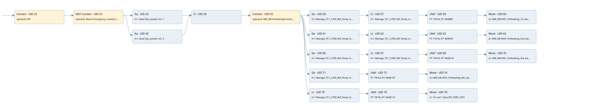

set points fn01
auto start motors · 검색 색인 순서 5 · 원본 내부 NID 추정 11
백업 PLF 원본의 2672928 바이트 위치에서 복원한 XML. 검색 문서 1845의 객체 키 16102200c86e000000000000와 연결했다. 이름 해석 38/43개. 남은 RefId는 상수 또는 미해석 참조다.
연결 구조 다시 그리기
원본 Part/PCon/Wire를 이용한 연결도다. TIA 화면의 래더 배치 또는 실행 결과를 재현한 그림은 아니다. 핀 연결은 아래 표와 원본 XML을 기준으로 읽는다. 노드 위에 마우스를 두면 피연산자 이름을 볼 수 있다.

접점·코일·블록과 피연산자
| Part UID | Gate | Negated 핀 | 연결 피연산자 |
|---|---|---|---|
| 22 | Contact | operand = ON | |
| 23 | Contact | operand | operand = Allarm.Emergency_module_fault |
| 24 | Eq | in1 = Data.Tipo_preset; in2 = 1 | |
| 39 | Eq | in1 = Data.Tipo_preset; in2 = 2 | |
| 29 | O | ||
| 55 | Contact | operand = HMI_DB.PreheatingControl_Enabled | |
| 56 | Ge | in1 = Manage_TC1_2.PID_Ref_Temp; in2 = HMI_DB.FN01_Preheating_1st_step_temperature | |
| 57 | Lt | in1 = Manage_TC1_2.PID_Ref_Temp; in2 = HMI_DB.FN01_Preheating_2nd_step_temperature | |
| 58 | LRef | 호출 참조: RefId 116; PT = T#10s; ET = RefId (RefId 없음) / ORef UID 85 | |
| 60 | Move | in = HMI_DB.FN01_Preheating_1st_step_speed; out1 = Data.SET_PERC_VT01 | |
| 61 | Ge | in1 = Manage_TC1_2.PID_Ref_Temp; in2 = HMI_DB.FN01_Preheating_2nd_step_temperature | |
| 62 | Lt | in1 = Manage_TC1_2.PID_Ref_Temp; in2 = HMI_DB.FN01_Preheating_3rd_step_temperature | |
| 63 | LRef | 호출 참조: RefId 116; PT = T#10s; ET = RefId (RefId 없음) / ORef UID 93 | |
| 65 | Move | in = HMI_DB.FN01_Preheating_2nd_step_speed; out1 = Data.SET_PERC_VT01 | |
| 66 | Ge | in1 = Manage_TC1_2.PID_Ref_Temp; in2 = HMI_DB.FN01_Preheating_3rd_step_temperature | |
| 67 | Lt | in1 = Manage_TC1_2.PID_Ref_Temp; in2 = HMI_DB.FN01_Preheating_4th_step_temperature | |
| 68 | LRef | 호출 참조: RefId 116; PT = T#10s; ET = RefId (RefId 없음) / ORef UID 101 | |
| 70 | Move | in = HMI_DB.FN01_Preheating_3rd_step_speed; out1 = Data.SET_PERC_VT01 | |
| 71 | Ge | in1 = Manage_TC1_2.PID_Ref_Temp; in2 = HMI_DB.FN01_Preheating_4th_step_temperature | |
| 72 | LRef | 호출 참조: RefId 116; PT = T#10s; ET = RefId (RefId 없음) / ORef UID 107 | |
| 74 | Move | in = HMI_DB.FN01_Preheating_4th_step_speed; out1 = Data.SET_PERC_VT01 | |
| 75 | Lt | in1 = Manage_TC1_2.PID_Ref_Temp; in2 = HMI_DB.FN01_Preheating_1st_step_temperature | |
| 76 | LRef | 호출 참조: RefId 116; PT = T#10s; ET = RefId (RefId 없음) / ORef UID 113 | |
| 78 | Move | in = 15; out1 = Data.SET_PERC_VT01 |
접점 경로를 펼친 조건식
Contact·O/A·비교기의 원본 연결을 읽기 쉽게 펼친 보조 해석이다. POWER는 전원 레일 시작을 뜻한다. 호출 블록·에지·타이머의 내부 동작과 다중 쓰기 순서는 이 표로 실행 검증하지 않았다. 미해석 핀과 RefId는 원문 연결표에서 확인한다.
| UID | 동작 | 대상 | 원본 접점 경로 | 내용 |
|---|---|---|---|---|
| 60 | Move | Data.SET_PERC_VT01 | LRef UID 58.Q (블록 동작 확인) | Move 입력 HMI_DB.FN01_Preheating_1st_step_speed |
| 65 | Move | Data.SET_PERC_VT01 | LRef UID 63.Q (블록 동작 확인) | Move 입력 HMI_DB.FN01_Preheating_2nd_step_speed |
| 70 | Move | Data.SET_PERC_VT01 | LRef UID 68.Q (블록 동작 확인) | Move 입력 HMI_DB.FN01_Preheating_3rd_step_speed |
| 74 | Move | Data.SET_PERC_VT01 | LRef UID 72.Q (블록 동작 확인) | Move 입력 HMI_DB.FN01_Preheating_4th_step_speed |
| 78 | Move | Data.SET_PERC_VT01 | LRef UID 76.Q (블록 동작 확인) | Move 입력 15 |
원본 배선 연결
| Wire UID | 동일 Wire 연결 끝점 |
|---|---|
| 21 | Powerrail {} ↔ Part 22.in |
| 30 | ORef 25 (ON) ↔ Part 22.operand |
| 31 | Part 22.out ↔ Part 23.in |
| 32 | ORef 26 (Allarm.Emergency_module_fault) ↔ Part 23.operand |
| 50 | Part 23.out ↔ Part 24.pre ↔ Part 39.pre |
| 34 | ORef 27 (Data.Tipo_preset) ↔ Part 24.in1 |
| 35 | ORef 28 (1) ↔ Part 24.in2 |
| 45 | Part 24.out ↔ Part 29.in1 |
| 52 | ORef 43 (Data.Tipo_preset) ↔ Part 39.in1 |
| 53 | ORef 44 (2) ↔ Part 39.in2 |
| 54 | Part 39.out ↔ Part 29.in2 |
| 168 | Part 29.out ↔ Part 55.in |
| 117 | ORef 79 (HMI_DB.PreheatingControl_Enabled) ↔ Part 55.operand |
| 118 | Part 55.out ↔ Part 56.pre ↔ Part 61.pre ↔ Part 66.pre ↔ Part 71.pre ↔ Part 75.pre |
| 119 | ORef 80 (Manage_TC1_2.PID_Ref_Temp) ↔ Part 56.in1 |
| 120 | ORef 81 (HMI_DB.FN01_Preheating_1st_step_temperature) ↔ Part 56.in2 |
| 121 | Part 56.out ↔ Part 57.pre |
| 122 | ORef 82 (Manage_TC1_2.PID_Ref_Temp) ↔ Part 57.in1 |
| 123 | ORef 83 (HMI_DB.FN01_Preheating_2nd_step_temperature) ↔ Part 57.in2 |
| 124 | Part 57.out ↔ Part 58.IN |
| 125 | ORef 84 (T#10s) ↔ Part 58.PT |
| 126 | Part 58.Q ↔ Part 60.en |
| 127 | Part 58.ET ↔ ORef 85 (RefId (RefId 없음)) |
| 128 | ORef 86 (HMI_DB.FN01_Preheating_1st_step_speed) ↔ Part 60.in |
| 129 | Part 60.out1 ↔ ORef 87 (Data.SET_PERC_VT01) |
| 130 | ORef 88 (Manage_TC1_2.PID_Ref_Temp) ↔ Part 61.in1 |
| 131 | ORef 89 (HMI_DB.FN01_Preheating_2nd_step_temperature) ↔ Part 61.in2 |
| 132 | Part 61.out ↔ Part 62.pre |
| 133 | ORef 90 (Manage_TC1_2.PID_Ref_Temp) ↔ Part 62.in1 |
| 134 | ORef 91 (HMI_DB.FN01_Preheating_3rd_step_temperature) ↔ Part 62.in2 |
| 135 | Part 62.out ↔ Part 63.IN |
| 136 | ORef 92 (T#10s) ↔ Part 63.PT |
| 137 | Part 63.Q ↔ Part 65.en |
| 138 | Part 63.ET ↔ ORef 93 (RefId (RefId 없음)) |
| 139 | ORef 94 (HMI_DB.FN01_Preheating_2nd_step_speed) ↔ Part 65.in |
| 140 | Part 65.out1 ↔ ORef 95 (Data.SET_PERC_VT01) |
| 141 | ORef 96 (Manage_TC1_2.PID_Ref_Temp) ↔ Part 66.in1 |
| 142 | ORef 97 (HMI_DB.FN01_Preheating_3rd_step_temperature) ↔ Part 66.in2 |
| 143 | Part 66.out ↔ Part 67.pre |
| 144 | ORef 98 (Manage_TC1_2.PID_Ref_Temp) ↔ Part 67.in1 |
| 145 | ORef 99 (HMI_DB.FN01_Preheating_4th_step_temperature) ↔ Part 67.in2 |
| 146 | Part 67.out ↔ Part 68.IN |
| 147 | ORef 100 (T#10s) ↔ Part 68.PT |
| 148 | Part 68.Q ↔ Part 70.en |
| 149 | Part 68.ET ↔ ORef 101 (RefId (RefId 없음)) |
| 150 | ORef 102 (HMI_DB.FN01_Preheating_3rd_step_speed) ↔ Part 70.in |
| 151 | Part 70.out1 ↔ ORef 103 (Data.SET_PERC_VT01) |
| 152 | ORef 104 (Manage_TC1_2.PID_Ref_Temp) ↔ Part 71.in1 |
| 153 | ORef 105 (HMI_DB.FN01_Preheating_4th_step_temperature) ↔ Part 71.in2 |
| 154 | Part 71.out ↔ Part 72.IN |
| 155 | ORef 106 (T#10s) ↔ Part 72.PT |
| 156 | Part 72.Q ↔ Part 74.en |
| 157 | Part 72.ET ↔ ORef 107 (RefId (RefId 없음)) |
| 158 | ORef 108 (HMI_DB.FN01_Preheating_4th_step_speed) ↔ Part 74.in |
| 159 | Part 74.out1 ↔ ORef 109 (Data.SET_PERC_VT01) |
| 160 | ORef 110 (Manage_TC1_2.PID_Ref_Temp) ↔ Part 75.in1 |
| 161 | ORef 111 (HMI_DB.FN01_Preheating_1st_step_temperature) ↔ Part 75.in2 |
| 162 | Part 75.out ↔ Part 76.IN |
| 163 | ORef 112 (T#10s) ↔ Part 76.PT |
| 164 | Part 76.Q ↔ Part 78.en |
| 165 | Part 76.ET ↔ ORef 113 (RefId (RefId 없음)) |
| 166 | ORef 114 (15) ↔ Part 78.in |
| 167 | Part 78.out1 ↔ ORef 115 (Data.SET_PERC_VT01) |
식별자 해석 근거 43개
| ORef UID | RefId | 이름 | IdentXmlPart 파일 | 해석 방법 |
|---|---|---|---|---|
| 25 | 1 | ON | 0575-IdentXmlPart.xml | UID/RID + search-text + NID agreement |
| 26 | 108 | Allarm.Emergency_module_fault | 0577-IdentXmlPart.xml | UID/RID + search-text + NID agreement |
| 27 | 12 | Data.Tipo_preset | 0577-IdentXmlPart.xml | UID/RID + search-text + NID agreement |
| 28 | 8 | 1 | 0578-IdentXmlPart.xml | literal candidate: UID/RID/NID + nearby named declarations + search-text agreement |
| 43 | 12 | Data.Tipo_preset | 0577-IdentXmlPart.xml | UID/RID + search-text + NID agreement |
| 44 | 78 | 2 | 0578-IdentXmlPart.xml | literal candidate: UID/RID/NID + nearby named declarations + search-text agreement |
| 79 | 156 | HMI_DB.PreheatingControl_Enabled | 0577-IdentXmlPart.xml | UID/RID + search-text + NID agreement |
| 80 | 158 | Manage_TC1_2.PID_Ref_Temp | 0577-IdentXmlPart.xml | UID/RID + search-text + NID agreement |
| 81 | 159 | HMI_DB.FN01_Preheating_1st_step_temperature | 0577-IdentXmlPart.xml | UID/RID + search-text + NID agreement |
| 82 | 158 | Manage_TC1_2.PID_Ref_Temp | 0577-IdentXmlPart.xml | UID/RID + search-text + NID agreement |
| 83 | 160 | HMI_DB.FN01_Preheating_2nd_step_temperature | 0577-IdentXmlPart.xml | UID/RID + search-text + NID agreement |
| 84 | 161 | T#10s | 0578-IdentXmlPart.xml | literal candidate: UID/RID/NID + nearby named declarations + search-text agreement |
| 85 | (RefId 없음) | 미해석 RefId | 식별 선언 원본 참조 | 미해석 |
| 86 | 162 | HMI_DB.FN01_Preheating_1st_step_speed | 0577-IdentXmlPart.xml | UID/RID + search-text + NID agreement |
| 87 | 60 | Data.SET_PERC_VT01 | 0577-IdentXmlPart.xml | UID/RID + search-text + NID agreement |
| 88 | 158 | Manage_TC1_2.PID_Ref_Temp | 0577-IdentXmlPart.xml | UID/RID + search-text + NID agreement |
| 89 | 160 | HMI_DB.FN01_Preheating_2nd_step_temperature | 0577-IdentXmlPart.xml | UID/RID + search-text + NID agreement |
| 90 | 158 | Manage_TC1_2.PID_Ref_Temp | 0577-IdentXmlPart.xml | UID/RID + search-text + NID agreement |
| 91 | 163 | HMI_DB.FN01_Preheating_3rd_step_temperature | 0577-IdentXmlPart.xml | UID/RID + search-text + NID agreement |
| 92 | 161 | T#10s | 0578-IdentXmlPart.xml | literal candidate: UID/RID/NID + nearby named declarations + search-text agreement |
| 93 | (RefId 없음) | 미해석 RefId | 식별 선언 원본 참조 | 미해석 |
| 94 | 164 | HMI_DB.FN01_Preheating_2nd_step_speed | 0577-IdentXmlPart.xml | UID/RID + search-text + NID agreement |
| 95 | 60 | Data.SET_PERC_VT01 | 0577-IdentXmlPart.xml | UID/RID + search-text + NID agreement |
| 96 | 158 | Manage_TC1_2.PID_Ref_Temp | 0577-IdentXmlPart.xml | UID/RID + search-text + NID agreement |
| 97 | 163 | HMI_DB.FN01_Preheating_3rd_step_temperature | 0577-IdentXmlPart.xml | UID/RID + search-text + NID agreement |
| 98 | 158 | Manage_TC1_2.PID_Ref_Temp | 0577-IdentXmlPart.xml | UID/RID + search-text + NID agreement |
| 99 | 165 | HMI_DB.FN01_Preheating_4th_step_temperature | 0577-IdentXmlPart.xml | UID/RID + search-text + NID agreement |
| 100 | 161 | T#10s | 0578-IdentXmlPart.xml | literal candidate: UID/RID/NID + nearby named declarations + search-text agreement |
| 101 | (RefId 없음) | 미해석 RefId | 식별 선언 원본 참조 | 미해석 |
| 102 | 166 | HMI_DB.FN01_Preheating_3rd_step_speed | 0577-IdentXmlPart.xml | UID/RID + search-text + NID agreement |
| 103 | 60 | Data.SET_PERC_VT01 | 0577-IdentXmlPart.xml | UID/RID + search-text + NID agreement |
| 104 | 158 | Manage_TC1_2.PID_Ref_Temp | 0577-IdentXmlPart.xml | UID/RID + search-text + NID agreement |
| 105 | 165 | HMI_DB.FN01_Preheating_4th_step_temperature | 0577-IdentXmlPart.xml | UID/RID + search-text + NID agreement |
| 106 | 161 | T#10s | 0578-IdentXmlPart.xml | literal candidate: UID/RID/NID + nearby named declarations + search-text agreement |
| 107 | (RefId 없음) | 미해석 RefId | 식별 선언 원본 참조 | 미해석 |
| 108 | 167 | HMI_DB.FN01_Preheating_4th_step_speed | 0577-IdentXmlPart.xml | UID/RID + search-text + NID agreement |
| 109 | 60 | Data.SET_PERC_VT01 | 0577-IdentXmlPart.xml | UID/RID + search-text + NID agreement |
| 110 | 158 | Manage_TC1_2.PID_Ref_Temp | 0577-IdentXmlPart.xml | UID/RID + search-text + NID agreement |
| 111 | 159 | HMI_DB.FN01_Preheating_1st_step_temperature | 0577-IdentXmlPart.xml | UID/RID + search-text + NID agreement |
| 112 | 161 | T#10s | 0578-IdentXmlPart.xml | literal candidate: UID/RID/NID + nearby named declarations + search-text agreement |
| 113 | (RefId 없음) | 미해석 RefId | 식별 선언 원본 참조 | 미해석 |
| 114 | 28 | 15 | 0578-IdentXmlPart.xml | literal candidate: UID/RID/NID + nearby named declarations + search-text agreement |
| 115 | 60 | Data.SET_PERC_VT01 | 0577-IdentXmlPart.xml | UID/RID + search-text + NID agreement |
검색 코드 보조 자료
참조 명칭을 찾기 위한 자료이며 실행 순서나 AND/OR 관계는 위 연결표로 확인한다.
"on" "allarm".emergency_module_fault "data".tipo_preset 1 "hmi_db".preheatingcontrol_enabled "manage_tc1_2".pid_ref_temp "hmi_db".fn01_preheating_1st_step_temperature "manage_tc1_2".pid_ref_temp "hmi_db".fn01_preheating_2nd_step_temperature ton "ton_2nd_step_fn01" t#10s move "hmi_db".fn01_preheating_1st_step_speed "data".tipo_preset 2 "manage_tc1_2".pid_ref_temp "hmi_db".fn01_preheating_2nd_step_temperature "manage_tc1_2".pid_ref_temp "hmi_db".fn01_preheating_3rd_step_temperature ton "ton_3rd_step_fn01" t#10s move "hmi_db".fn01_preheating_2nd_step_speed "data".set_perc_vt01 "manage_tc1_2".pid_ref_temp "hmi_db".fn01_preheating_3rd_step_temperature "manage_tc1_2".pid_ref_temp "hmi_db".fn01_preheating_4th_step_temperature ton "ton_4th_step_fn01" t#10s move "hmi_db".fn01_preheating_3rd_step_speed "data".set_perc_vt01 "manage_tc1_2".pid_ref_temp "hmi_db".fn01_preheating_4th_step_temperature ton "ton_last_step_fn01" t#10s move "hmi_db".fn01_preheating_4th_step_speed "data".set_perc_vt01 "manage_tc1_2".pid_ref_temp "hmi_db".fn01_preheating_1st_step_temperature ton "ton_1st_step_fn01" t#10s move 15 "data".set_perc_vt01 "data".set_perc_vt01